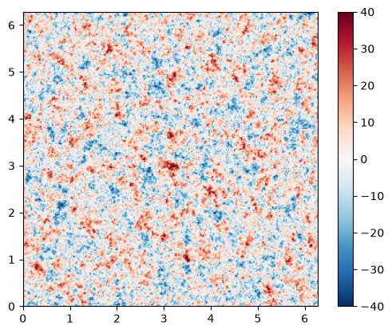
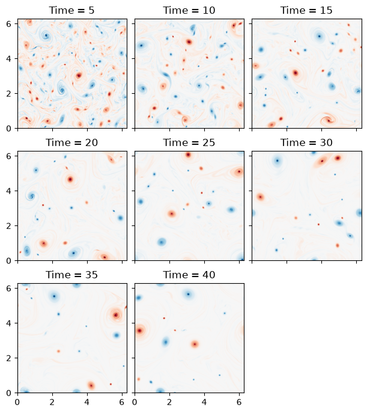
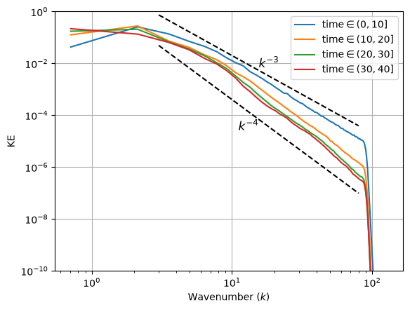
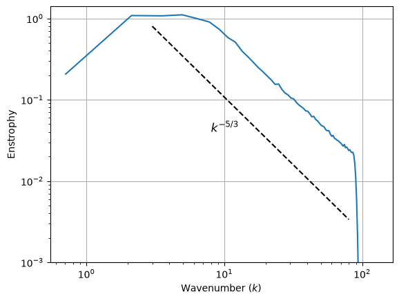

Barotropic Model
This example is reworked from the original PyQG Barotropic Model example. We reproduce a plot from the paper
“The emergence of isolated coherent vortices in turbulent
flow” and illustrate the
use of the BTModel as well as some more
advanced diagnostics computations.
%env JAX_ENABLE_X64=True
import operator
import functools
import math
import matplotlib.pyplot as plt
import jax
import jax.numpy as jnp
import powerpax
import pyqg_jax
env: JAX_ENABLE_X64=True
Construct the Model
We will use a BTModel operating on a
square \(2\pi\times2\pi\) periodic grid. We also configure the
AB3Stepper to match the stepping used in
PyQG.
DT = 0.001
T_MAX = 40
MEASURE_INTERVAL = 1
SNAP_INTERVAL = 5
stepped_model = pyqg_jax.steppers.SteppedModel(
pyqg_jax.bt_model.BTModel(
L=2 * jnp.pi,
nx=256,
beta=0,
H=1,
rek=0,
rd=None,
precision=pyqg_jax.state.Precision.SINGLE,
),
pyqg_jax.steppers.AB3Stepper(DT),
)
stepped_model
SteppedModel(
model=BTModel(
nx=256,
ny=256,
L=6.283185307179586,
W=6.283185307179586,
rek=0,
filterfac=23.6,
f=None,
g=9.81,
beta=0,
rd=0.0,
H=1,
U=0.0,
precision=<Precision.SINGLE: 1>,
),
stepper=AB3Stepper(dt=0.001),
)
Configure Initial Condition
The initial condition is randomized, we use a fixed seed for this example.
rng = jax.random.key(0)
The initial condition is generated with spectrum
where \(\kappa\) is the wave number magnitude. The constant \(A\) is chosen so the initial energy is \(\text{KE} = 0.5\).
# Compute ckappa base
ckappa = jnp.reciprocal(
jnp.sqrt(
stepped_model.model.wv2 * (1 + (stepped_model.model.wv2 / 36) ** 2)
)
)
ckappa = ckappa.at[0, 0].set(0)
# Split RNGs and initialize pi_hat with noise
rng, rng1, rng2 = jax.random.split(rng, 3)
dummy_state = stepped_model.model.create_initial_state(jax.random.key(0))
pi_hat = (
jax.random.normal(rng1, shape=dummy_state.qh.shape[1:], dtype=dummy_state.q.dtype) * ckappa
+ 1j * jax.random.normal(rng2, shape=dummy_state.qh.shape[1:], dtype=dummy_state.q.dtype) * ckappa
)
# Normalize values (zero mean and adjust KE)
pi = jnp.fft.irfftn(pi_hat, axes=(-2, -1))
pi = pi - jnp.mean(pi)
pi_hat = jnp.fft.rfftn(pi, axes=(-2, -1))
ke_aux = jnp.var(
jnp.fft.irfftn(stepped_model.model.wv * pi_hat, axes=(-2, -1))
)
pih = pi_hat / jnp.sqrt(ke_aux)
qih = -stepped_model.model.wv2 * pih
# Package state for stepped_model
init_state = stepped_model.initialize_stepper_state(
dummy_state.update(qh=jnp.expand_dims(qih, 0))
)
init_state
AB3State(
t=f32[],
tc=u32[],
state=PseudoSpectralState(qh=c64[1,256,129]),
)
We can examine the initial state
vmax = 40
plt.imshow(
init_state.state.q[0],
vmin=-vmax,
vmax=vmax,
cmap="RdBu_r",
extent=(0, stepped_model.model.W, 0, stepped_model.model.L),
)
plt.colorbar()
<matplotlib.colorbar.Colorbar at 0x7f687014cd50>

Run the Model
We follow the example from Basic Time Stepping to roll out the
trajectory using powerpax.sliced_scan() to skip steps according
to MEASURE_INTERVAL.
@functools.partial(jax.jit, static_argnames=["num_steps", "subsample"])
def roll_out_state(state, num_steps, subsample):
def loop_fn(carry, _x):
current_state = carry
next_state = stepped_model.step_model(current_state)
return next_state, current_state
_final_carry, traj_steps = powerpax.sliced_scan(
loop_fn, state, None, length=num_steps, step=subsample,
)
return traj_steps
Before running the model we calculate the total number of steps we need to run as well as the subsampling we should apply before calculating diagnostics.
num_steps = math.ceil(T_MAX / DT) + 1
avg_subsample = math.ceil(MEASURE_INTERVAL / DT)
print(f"Total steps to run: {num_steps}")
print(f"Subsample factor for diagnostics: {avg_subsample}")
Total steps to run: 40001
Subsample factor for diagnostics: 1000
Roll out the trajectory for the above number of steps. Note that after
generating, we drop the first state since this is the initial
condition and it will significantly impact the spectra we will plot
later. We do this using jax.tree.map() and
operator.itemgetter() with an appropriate slice.
traj = roll_out_state(init_state, num_steps, avg_subsample)
# Skip the first (initial condition step)
# This does a slice of [1:] on each array
traj = jax.tree.map(operator.itemgetter(slice(1, None, None)), traj)
traj
AB3State(
t=f32[40],
tc=u32[40],
state=PseudoSpectralState(qh=c64[40,1,256,129]),
)
Plot States
We plot each snapshot, one for each SNAP_INTERVAL steps subsampled
further from the diagnostic trajectory.
# Calculate the subsampling interval as well as how many rows, cols we need
plot_subsample_factor = math.ceil(SNAP_INTERVAL / MEASURE_INTERVAL)
cols = 3
rows = math.ceil(traj.t[::plot_subsample_factor].shape[0] / cols)
vmax = 40
fig, axs = plt.subplots(
rows,
cols,
layout="constrained",
figsize=(6, 2.25 * rows),
sharex=True,
sharey=True,
)
for raw_step_i, ax in enumerate(axs.ravel()):
step_i = (raw_step_i + 1) * plot_subsample_factor - 1
if step_i >= traj.tc.shape[0]:
fig.delaxes(ax)
continue
step = jax.tree.map(operator.itemgetter(step_i), traj)
ax.imshow(
step.state.q[0],
vmin=-vmax,
vmax=vmax,
cmap="RdBu_r",
extent=(0, stepped_model.model.W, 0, stepped_model.model.L),
)
ax.set_title(f"Time = {round(step.t.item())}")

Diagnostics
Next we compute several diagnostics over this trajectory these use
functions from the diagnostics module and most of the
below calculations are patterned after the Diagnostics Example. However, the KE spectrum calculations have
been modified significantly to illustrate changes in the spectra over
time.
CFL
We begin by computing the CFL condition values. See
pyqg_jax.diagnostics.cfl(). We report the worst CFL value and
the average over the sampled states.
def compute_cfl(state, model, dt):
full_state = model.get_full_state(state)
cfl = pyqg_jax.diagnostics.cfl(
full_state=full_state,
grid=model.get_grid(),
ubg=model.Ubg,
dt=dt,
)
return jnp.max(cfl)
@jax.jit
def vectorized_cfl(traj, stepped_model):
return powerpax.chunked_vmap(
functools.partial(
compute_cfl, model=stepped_model.model, dt=stepped_model.stepper.dt
),
chunk_size=100,
)(traj)
traj_cfl = vectorized_cfl(traj.state, stepped_model)
print(f"Max CFL: {jnp.max(traj_cfl)}")
print(f"Avg CFL: {jnp.mean(traj_cfl)}")
Max CFL: 0.19791264832019806
Avg CFL: 0.14962179958820343
Kinetic Energy
We calculate the total KE in each snapshot taken in the trajectory.
See pyqg_jax.diagnostics.total_ke().
def compute_ke(state, model):
full_state = model.get_full_state(state)
return pyqg_jax.diagnostics.total_ke(full_state, model.get_grid())
@jax.jit
def vectorized_ke(traj, model):
return powerpax.chunked_vmap(
functools.partial(compute_ke, model=model), chunk_size=100
)(traj)
traj_ke = vectorized_ke(traj.state, stepped_model.model)
print(f"Max KE: {jnp.max(traj_ke)}")
print(f"Min KE: {jnp.min(traj_ke)}")
Max KE: 0.49655744433403015
Min KE: 0.4923986792564392
Note that kinetic energy is nearly conserved over the course of the run.
Kinetic Energy Spectrum
The KE spectrum calculations are the most heavily modified from the templates provided in the Diagnostics Example document. Instead of calculating one spectrum over the entire trajectory, we use additional JAX transforms to calculate multiple spectra over disjoint time intervals. This is relatively straightforward since in the JAX port, diagnostics are computed after the simulation run so the bins for averaging can be adjusted after the snapshots are gathered.
The chunked_ke_spec function below divides the trajectory into
chunks of KE_SPEC_CHUNK_SIZE snapshots. This is in addition to the
subsampling done while generating the trajectory. That is, each chunk
is over a time range of KE_SPEC_CHUNK_SIZE * MEASURE_INTERVAL.
KE_SPEC_CHUNK_SIZE = 10
def compute_ke_spec_vals(state, model):
full_state = model.get_full_state(state)
ke_spec_vals = pyqg_jax.diagnostics.ke_spec_vals(
full_state=full_state,
grid=model.get_grid(),
)
return ke_spec_vals
@functools.partial(jax.jit, static_argnames=["chunk_size"])
def chunked_ke_spec(traj, model, chunk_size):
# If the trajectory is not evenly divisible by chunk_size
# we need to remove trailing elements
chunk_size = operator.index(chunk_size)
if chunk_size < 1:
raise ValueError(f"chunk_size must be at least 1 (got {chunk_size})")
traj_len = jax.tree.leaves(traj)[0].shape[0]
num_chunks = traj_len // chunk_size
# Remove any trailing steps to traj evenly splits into chunks
traj = jax.tree.map(
operator.itemgetter(slice(None, num_chunks * chunk_size)),
traj,
)
# Compute the ke_spec_vals over the trajectory as usual
traj_ke_spec_vals = powerpax.chunked_vmap(
functools.partial(compute_ke_spec_vals, model=stepped_model.model),
chunk_size=100,
)(traj)
# Break the spectral values into chunks and average within each chunk
traj_ke_spec_vals = traj_ke_spec_vals.reshape(
(num_chunks, chunk_size) + traj_ke_spec_vals.shape[1:]
)
ke_spec_vals = jnp.mean(traj_ke_spec_vals, axis=1)
# Compute the spectrum over each chunk separately
# Use in_axes to avoid vmapping over the model grid
ispec = jax.vmap(pyqg_jax.diagnostics.calc_ispec, in_axes=(0, None))(
ke_spec_vals, model.get_grid()
)
# Each spectrum has the same ispec_grid, these are not vectorized
kr, keep = pyqg_jax.diagnostics.ispec_grid(model.get_grid())
return ispec, kr, keep
traj_ke_spec, kr, keep = chunked_ke_spec(traj.state, stepped_model.model, KE_SPEC_CHUNK_SIZE)
We plot each spectrum separately on the same axes with two dotted trendlines.
for i, tks in enumerate(traj_ke_spec):
min_time = KE_SPEC_CHUNK_SIZE * i * MEASURE_INTERVAL
max_time = KE_SPEC_CHUNK_SIZE * (i + 1) * MEASURE_INTERVAL
plt.loglog(kr[:keep], tks[0, :keep], label=fr"$\text{{time}} \in ({min_time}, {max_time}]$")
plt.xlabel("Wavenumber ($k$)")
plt.ylabel("KE")
plt.ylim(1e-10, 1)
plt.grid()
plt.legend()
ks = jnp.array([3.0, 80.0])
mid_k = 10**(jnp.mean(jnp.log10(ks)))
for i, (y_off, slope) in enumerate([(4, -4), (20, -3)]):
es = y_off * ks**slope
midpt = y_off * mid_k**slope
plt.loglog(ks, es, "k--")
plt.text(
mid_k,
midpt,
fr"$k^{{{slope}}}$",
fontsize="large",
horizontalalignment="left" if i == 1 else "right",
verticalalignment="bottom" if i == 1 else "top",
)

Note how—as in the McWilliams paper—the spectrum becomes steeper over time.
Enstrophy Spectrum
We calculate the enstrophy spectrum for the entire trajectory (see
pyqg_jax.diagnostics.ens_spec_vals())
def compute_ens_spec_vals(state, model):
full_state = model.get_full_state(state)
e_spec_vals = pyqg_jax.diagnostics.ens_spec_vals(
full_state=full_state,
grid=model.get_grid(),
)
return e_spec_vals
@jax.jit
def vectorized_ens_spec(traj, model):
traj_ens_spec_vals = powerpax.chunked_vmap(
functools.partial(compute_ens_spec_vals, model=stepped_model.model),
chunk_size=100,
)(traj)
ens_spec_vals = jnp.mean(traj_ens_spec_vals, axis=0)
ispec = pyqg_jax.diagnostics.calc_ispec(ens_spec_vals, model.get_grid())
kr, keep = pyqg_jax.diagnostics.ispec_grid(model.get_grid())
return ispec, kr, keep
traj_ens_spec, kr, keep = vectorized_ens_spec(traj.state, stepped_model.model)
and plot it with a dashed trendline.
ks = jnp.array([3.0, 80.0])
es = 5 * ks**(-5/3)
plt.loglog(kr[:keep], traj_ens_spec[0, :keep])
plt.loglog(ks, es, "k--")
plt.text(8, 0.04, "$k^{-5/3}$", fontsize="large")
plt.xlabel("Wavenumber ($k$)")
plt.ylabel("Enstrophy")
plt.ylim(1e-3, 1.4e0)
plt.grid()
